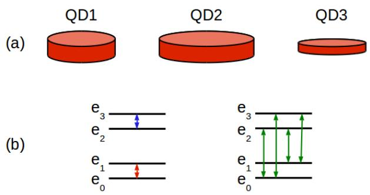
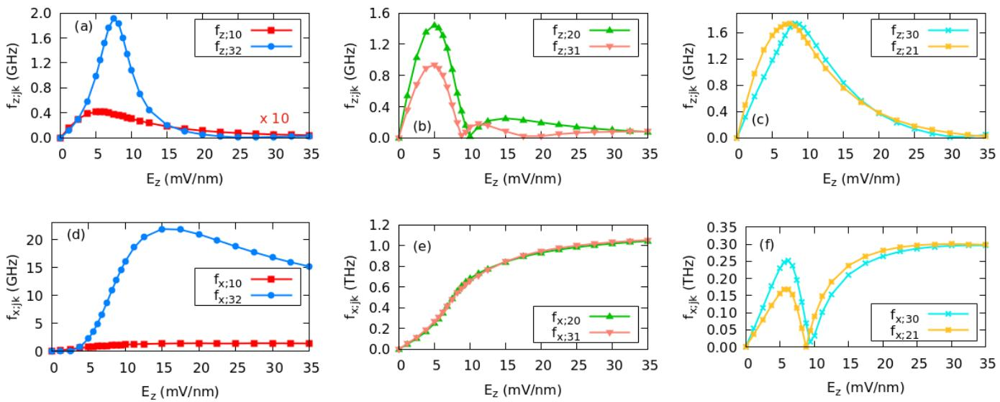
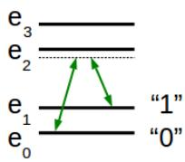

物理背景：为什么基态双态”慢”
半导体量子点中的空穴态在零场下组成 Kramers 双态；外加磁场 解除简并后，最低双态的两个本征态 、 自然充当空穴自旋量子比特的逻辑态。全电操控依赖自旋轨道耦合带来的带混合——纯粹的重空穴（HH）态在均匀交流电场下几乎不响应。问题在于：垂直约束远强于面内约束时，基态双态几乎是纯 HH 态（该计算中 HH 占据约 0.98），且具有明确的镜面对称性，均匀电场的偶极矩阵元被对称性压低。相比之下，第一激发双态 、 带混合更强（HH 占据约 0.91）、对称性性质不同，跃迁幅度可以大出量级——这是”巨拉比频率”的来源。
计算基于 Luttinger–Kohn 六带哈密顿量的包络函数方法，器件原型取 Si/SiO₂ 界面的 MOS 型空穴点（与Si-MOS 量子点工艺对应）：生长方向由 Si/SiO₂ 带阶（叠加偏置场 ）锐利约束，面内由栅极静电势光滑约束。三个几何做了系统对比（下图）：参考点 QD1、面内约束减半的 QD2（ nm）、阱宽减半的 QD3。

论文总体框架示意：(a) 三种量子点几何——参考点 QD1（同时用于偏压与应变扫描）、面内约束更弱的 QD2、垂直约束更紧的 QD3，特征参数由表 I 给出（面内约束能 、阱宽 、偏压 等）；(b) 每种结构中考查的跃迁类型：基态双态内部（红）、第一激发双态内部（蓝）与双态之间（绿）。图源：Fanucchi et al. (2025)，Fig. 1。
跃迁幅度与对称性判据
四能级框架下，能隙记作
其中 是第 个空穴本征态能量（，磁场已解除双重简并）。沿 方向、幅度 的交流电场诱导的跃迁速率（Rabi 频率）为
其中 是空穴位置算符沿交流电场方向的分量， 为普朗克常数。 同时线性依赖于 与 ，其他场强下的数值可按比例换算。
决定 大小的不是带混合的多少，而是镜面对称性。用镜面反射算符的期望值
量化（ 是态 中 带分量的包络函数；、 的定义类似，分别对应 、）。取值 表示该方向有严格（反）对称性， 表示对称性未定义。选择定则可以一句话概括：当参与跃迁的两个态沿交流电场方向的镜面对称性相反时 最大，相同时被压制——偶极算符 本身沿该方向是奇算符。参考点 QD1 中，基态双态近似对称（，而 ），激发双态沿最弱约束方向 近似反对称（ 到 ），这正是面内电场驱动双态间跃迁异常大的对称性根源。
数值量级：三个增强台阶
在 、 下（三个几何结论一致）：
| 跃迁类型 | （最弱约束方向） | |
|---|---|---|
| 基态双态内 | 基准 | 比 大三个量级 |
| 激发双态内 | 比 大一个量级 | 同上比例增强 |
| 双态之间 | 约 MHz | THz 量级 |
即：换成激发双态内跃迁得一个量级；换成双态间跃迁再得一到两个量级；把电场转到面内最弱约束方向（使两态沿该方向对称性相反）再得三到四个量级。面内场下双态间跃迁的 Rabi 频率已与跃迁频率本身（能隙约 1 meV 量级，双态内约 0.1 meV）可比——进入超强耦合区，原则上支持超快量子计算方案，但也要求多能级方案（如最优控制）来分辨彼此靠近的跃迁线。
两个可调旋钮：偏压与应变
偏压场 是最有效的增强手段。扫描 QD1（）发现：在 – 区间，激发双态经历一次从轻空穴主导（LH 占据约 0.8）到重空穴主导（约 0.9）的特性转变，同时其沿 的镜面对称性从对称翻转为反对称；所有 在该转变区出现显著极大值，比 处大一到两个量级。而 的行为相反：零偏压下各态沿 对称性相同、跃迁被强烈压制；高偏压区（）对称性充分建立后饱和于最大值。

偏压场对跃迁速率的调制（QD1，，）：上排为垂直驱动 、下排为面内驱动 ，横轴均为偏压 。 在 – 的激发态特性转变区出现比高偏压端大一到两个量级的尖峰； 则从零偏压的对称性压制区单调上升后饱和——两种取向互补，共同印证”对称性相反则跃迁增强”的选择定则。图源：Fanucchi et al. (2025)，Fig. 6。
单轴压缩应变（沿 [110]，pMOSFET 中提升空穴迁移率的常规手段，经 Bir–Pikus 哈密顿量计入）则演示了选择定则的”方向开关”效应：仅约 10 MPa 的压缩应力就把最弱约束方向从 换到 ——激发双态的激发方向即刻翻转。结果是沿 的双态间跃迁速率骤降两个量级（电场不再对准最弱约束方向），而 在 内增强一个量级、 在 附近显著增强。沿原最弱方向施加压缩应变总体上不利于空穴态操控。
激发态的三种用法
论文给出四种编码/操控方案（图 8），其中三种利用激发态：
- 激发态编码：把逻辑态 直接取为激发双态中的一个态，用双态间跃迁做翻转——读取前再把 映射回 走常规读出流程；
- qudit 编码：四个最低空穴态各对应一个逻辑态，双态内与双态间跃迁都是操控手段（需要最优控制方法）；
- Raman 虚跃迁：保留常规基态双态编码，用激发态做不被占据的中继能级——两个失谐 的场经 耦合 与 ，有效跃迁速率为
其中 、 是两段双态间跃迁的 Rabi 频率， 是两束场共同的失谐。条件 保证虚跃迁区（激发态占据可忽略、其退相干时间 不进入门保真度，只要 ）；由于双态间跃迁速率比直接跃迁大几个量级，即便满足该条件仍有 。

Raman 虚跃迁方案的能级图：量子比特仍由基态双态 、 编码，两束失谐 的驱动场经激发态 把两个比特态间接耦合；激发态只充当虚中继、几乎不被占据，其较短的退相干时间不污染门保真度。图源：Fanucchi et al. (2025)，Fig. 8 面板 (d)。
多空穴体系同样绕不开激发态： 空穴比特的基态双态是多个 Slater 行列式的叠加，电偶极矩阵元分解为单空穴跃迁矩阵元之和，其中多数涉及激发双态的占据——即使激发能级占据比例有限，其量级更大的跃迁幅度也会显著贡献总 Rabi 频率。
退相干：涨落方向的强烈各向异性
激发态的代价是”电荷激发”通常相干时间更短，但初步分析显示电荷噪声的方向依赖极强：把涨落电场 分别沿 和 方向扫描能级，沿 的能移比沿 小九个数量级。原因仍是镜面对称性——沿 具有确定对称性的态对 奇算符 的期望值本就受压制；且 时各能移几乎相同，能隙涨落（非均匀退相位）反而很小。沿 的涨落则让双态间叠加（如 与 ）的退相位远快于双态内叠加。这为激发态方案指出了噪声几何：让主要电荷噪声通道避开最弱约束方向。
与其他概念的关系
- 空穴自旋量子比特：本词条是其”激发态资源化”分支——标准编码只用基态双态，这里给出激发双态编码、qudit 与 Raman 中继三种扩展，且适用于硅 MOS 平台而不仅限于锗。
- Rabi 振荡：巨拉比跃迁是空穴体系中把 从百 MHz 推向 THz 的理论路径，量级增益来自激发态带混合与对称性选择定则两层。
- 自旋轨道耦合：六带 Luttinger–Kohn 哈密顿量中的带混合是电场得以驱动自旋跃迁的中介；对称性判据决定混合”往哪个跃迁”上转化。
- 电四极自旋共振：同为”超出常规偶极 EDSR”的快速驱动机制——EQSR 靠四极场直接耦合宇称相反的激发轨道，本词条靠激发双态自身的对称性差异，两者互补。
- Zeeman 效应：磁场解除 Kramers 简并定义比特态； 对磁场取向 的依赖（面内场下 出现极大、垂直场下多为极小）是实验鉴别跃迁通道的指纹。
- Si-MOS 量子点与电荷噪声：计算针对 Si/SiO₂ 界面 MOS 几何；电荷噪声对激发态叠加的影响强烈依赖涨落方向，界面工程应配合噪声几何设计。
参考文献
- Fanucchi, E., Forghieri, G., Secchi, A., Bordone, P., Troiani, F. Giant Rabi frequencies between qubit and excited hole states in silicon quantum dots. Physical Review B 111, 205409 (2025). DOI: 10.1103/physrevb.111.205409；arXiv:2411.05526（QAtlas 缓存：2411.05526）。
完整文献库（含各篇站内全文页）见 参考文献库。